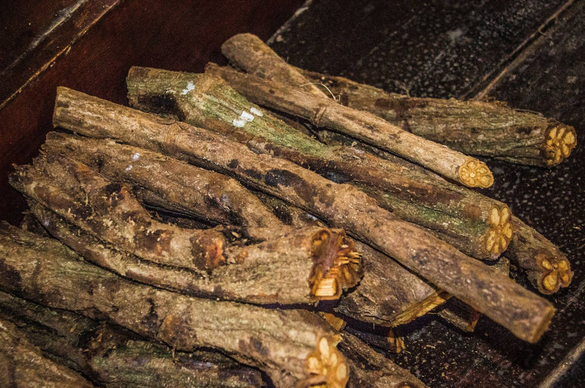
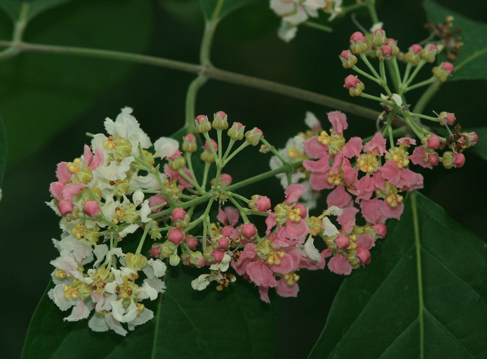
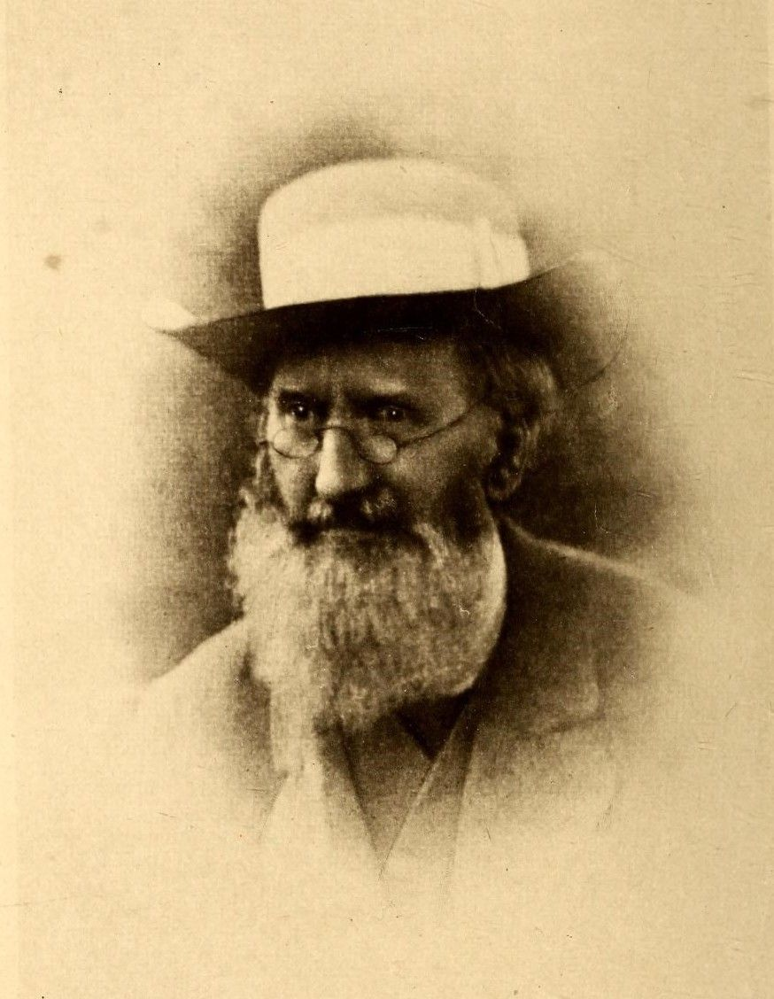
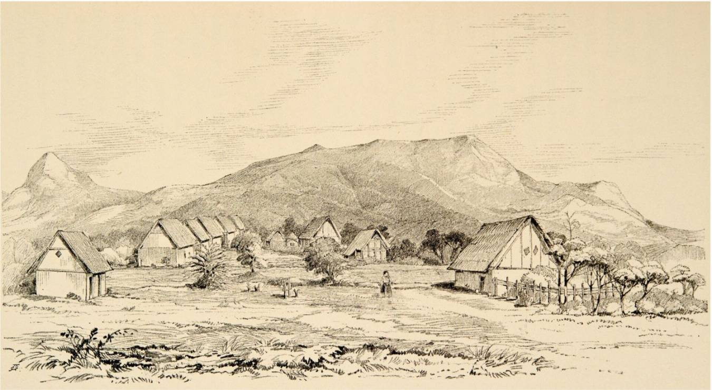
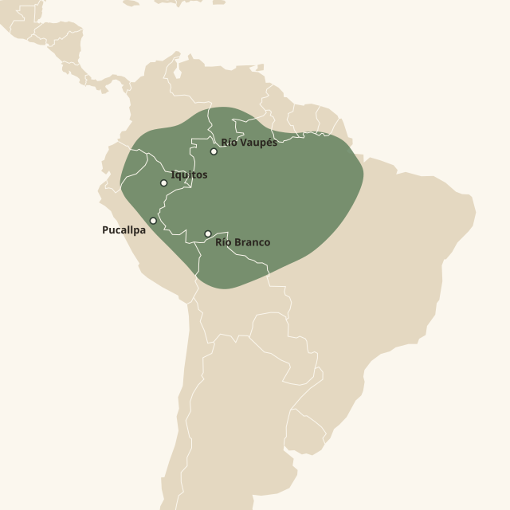
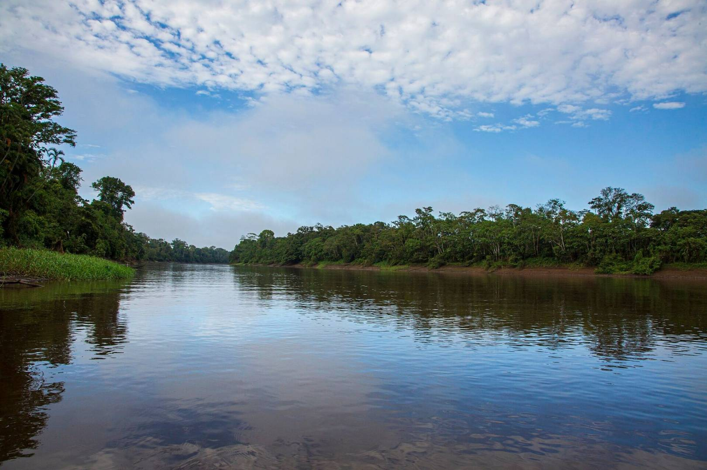
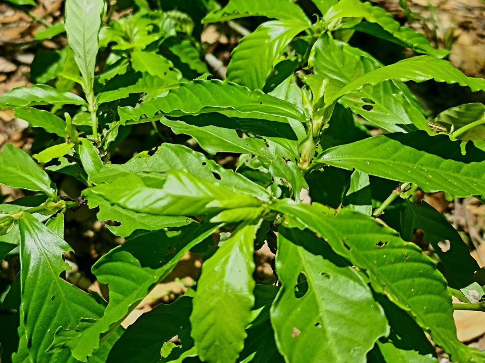
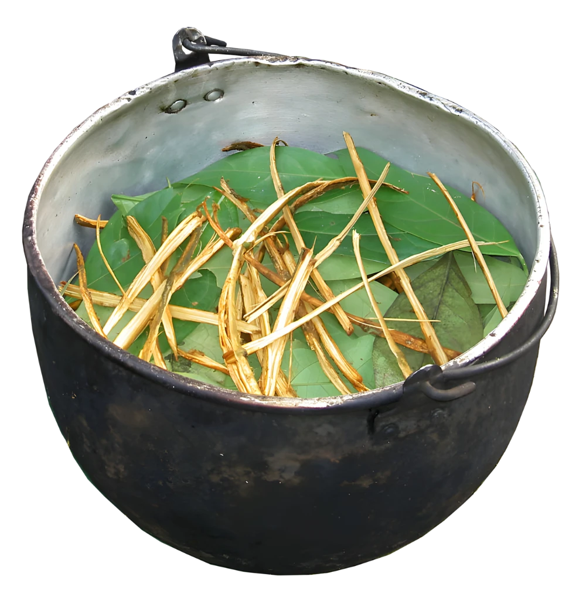
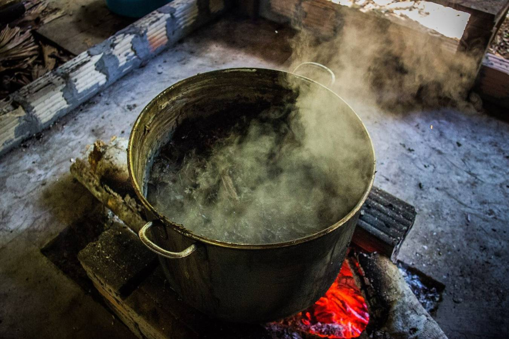
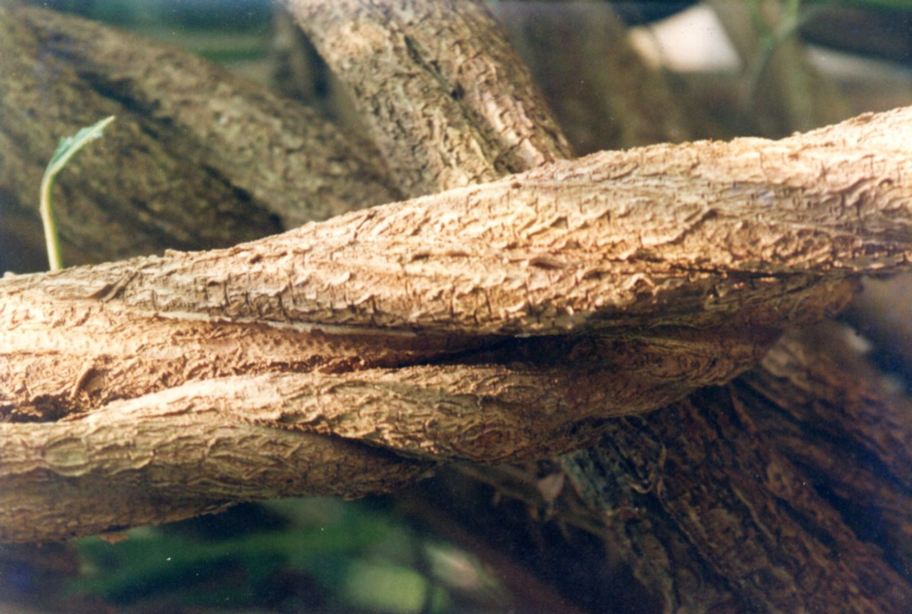

Preparado · Malpigiáceas · Cuenca amazónica
Ayahuasca
Banisteriopsis caapi (Spruce ex Griseb.) C.V.Morton
En quechua, aya es espíritu o antepasado y waska, soga. La «soga de los espíritus» es una liana y es también la bebida que decenas de pueblos amazónicos cuecen con ella para curar, ver y decidir.8
También se llamayagé · caapi · natem · oni · kamarampi · nixi pae · hoasca · daime

- Qué es
- Bebida de dos plantas: una liana y las hojas de un arbusto
- Territorio
- Cuenca amazónica: Perú, Brasil, Colombia, Ecuador y Bolivia
- Parte usada
- Tallo de la liana y hojas de chacruna
- Principios activos
- Harmina, harmalina, tetrahidroharmina y DMT
- Empieza y dura
- 30–60 min · 4–6 horas
- Quién guarda su memoria
- Shipibo-konibo, tukano, shuar, asháninka, huni kuin y muchos otros
Botánica
Una soga que trepa hasta el dosel
La ayahuasca es una liana leñosa de la familia de las malpigiáceas. Sus tallos se retuercen unos sobre otros como una cuerda y trepan por los árboles hasta la luz. Al cortarlos aparece un dibujo de lóbulos que recuerda a una flor: es la imagen que abre esta ficha.8
Las hojas nacen de dos en dos, ovaladas y acabadas en punta. Las flores, pequeñas y rosadas, palidecen hasta el blanco, y el fruto es una sámara, una semilla con ala que el viento hace girar. Los pueblos que la usan la siembran junto a sus casas y chacras, tanto que hoy resulta difícil saber dónde es silvestre.2
La bebida necesita una segunda planta. La más habitual es la chacruna (Psychotria viridis), un arbusto de la familia del café; en otras regiones se usa la chaliponga (Diplopterys cabrerana).8

- Familia
- Malpighiaceae
- Porte
- Liana leñosa trepadora
- Flor
- Rosada, en racimos
- Fruto
- Sámara, semilla con ala
Memoria y tradición
La bebida que enseña
Decenas de pueblos de la Amazonía de Perú, Colombia, Ecuador, Brasil y Bolivia la toman para curar, para adivinar y como parte de su manera de entender el mundo. Nadie puede fechar con precisión cuándo empezó.8
Quien dirige la toma canta. En la Amazonía peruana esos cantos se llaman ícaros. El pueblo shipibo-konibo borda y pinta además unos diseños geométricos, el kené, que pertenecen a ese mismo mundo.
El primer botánico que la recogió fue el inglés Richard Spruce. En 1851, en el río Vaupés, la encontró entre los tukano y anotó el nombre que le daban: caapi.10
En el tiempo
En la Cueva del Chileno, en el altiplano de Bolivia, un atado ritual guarda restos de harmina y de DMT juntos: es el indicio químico más antiguo de los dos componentes de la bebida.3
Richard Spruce recoge la liana entre los tukano del río Vaupés.10
August Grisebach publica el nombre Banisteria caapi en la Flora Brasiliensis.1
En Brasil, Raimundo Irineu Serra funda el Santo Daime, que une la bebida con el cristianismo.
José Gabriel da Costa funda la União do Vegetal.
El equipo de Jordi Riba, en Barcelona, describe cómo actúa en el cuerpo humano.4
Primer ensayo controlado con placebo en personas con depresión resistente.5


Sus nombres
- ayahuasca
- quechua: «soga de los espíritus»
- yagé, yajé
- Colombia y Ecuador
- caapi
- Brasil; el nombre que anotó Spruce
- natem
- shuar
- kamarampi
- asháninka
- oni
- shipibo-konibo
- nixi pae
- huni kuin
- hoasca, daime
- religiones ayahuasqueras de Brasil
Territorio y cuidado
Una liana cada vez más buscada

Kew sitúa su área nativa en el sur de la América tropical, en la selva húmeda de tierras bajas.1 Fuera de allí se cultiva en jardines y viveros de medio mundo.
La liana tarda al menos cinco años en poder cosecharse. Con la demanda de fuera, quienes la recogen hablan de escasez, de precios al alza y de lianas cada vez más jóvenes, y más de cien curanderos shipibo-konibo han expresado su preocupación por la sobreexplotación.6
Estado de conservación · NE, no evaluada
La Lista Roja de la UICN todavía no ha evaluado la especie.6

Qué ayuda
- Cultivarla fuera del bosque y en sistemas agroforestales.
- Proteger las lianas grandes.
- Que los beneficios lleguen a las comunidades de origen.
- Distinguir lo tradicional de lo reciente y no llamar «ancestral» a lo nuevo.
Qué contiene
Dos plantas, una llave
Tomada sola por la boca, la DMT de las hojas no hace efecto: una enzima del intestino y del hígado, la MAO, la destruye antes de que llegue al cerebro. La liana aporta las sustancias que frenan esa enzima. Juntas, las dos plantas abren una experiencia de varias horas.4
Cada preparación es distinta, y se han descrito más de doscientas plantas que a veces se añaden a la cocción.9
 Harminaβ-carbolina · de la liana
Harminaβ-carbolina · de la lianaFrena de forma reversible la enzima MAO-A. Con la harmalina y la tetrahidroharmina deja pasar la DMT a la sangre.
 DMTTriptamina · de las hojas
DMTTriptamina · de las hojasActiva los receptores de serotonina 5-HT2A, como los demás psicodélicos clásicos. De ahí vienen las visiones.
La experiencia
Entre cuatro y seis horas
Empieza a notarse entre media hora y una hora después de beberla, llega a su punto más alto hacia las dos horas y se apaga en cuatro a seis.4 Trae visiones, emociones intensas y una mirada hacia dentro.
Casi siempre hay náuseas y, con frecuencia, vómito. En la tradición esa purga se entiende como una limpieza.
Esquema orientativo: cambia con la preparación, la cantidad y la persona.
Investigación
Qué se ha estudiado
En los años 2000, el equipo de Jordi Riba en el Hospital de Sant Pau de Barcelona describió cómo se absorbe y cómo actúa la ayahuasca en el cuerpo humano.4
En 2019, un ensayo en Brasil con 29 personas con depresión resistente comparó una sola toma con un placebo. Una semana después había respondido el 57 % de quienes la tomaron, frente al 20 % del grupo placebo.5 En adicciones solo hay estudios pequeños y sin grupo de comparación.
Alcance de estos datosEse ensayo se hizo con supervisión médica, en un solo centro y con pocas personas. No equivale a una ceremonia ni convierte la bebida en un tratamiento.
Con cuidado
Lo que conviene saber antes
Una experiencia psicológica muy difícil y, en personas predispuestas, episodios de psicosis o de manía.7
Antidepresivos y otros fármacos que actúan sobre la serotonina: la combinación puede ser grave.
Sube la tensión y el pulso de forma moderada. Importa si hay hipertensión o una enfermedad del corazón.4
Algunas bebidas llevan otras plantas, como el toé (Brugmansia), que cambian el efecto y el riesgo.
Galería
Mirar de cerca




Para seguir
Libros y medicinas emparentadas
 Vine of the SoulRichard Evans Schultes y Robert F. Raffauf · 1992En la biblioteca de APDER →Ayahuasca ReaderLuis Eduardo Luna y Steven F. White (eds.) · 2000En la biblioteca de APDER →Biblioteca de APDERAyahuasca y saludAyahuasca y saludBeatriz Caiuby Labate y José Carlos Bouso (eds.) · 2013En la biblioteca de APDER →
Vine of the SoulRichard Evans Schultes y Robert F. Raffauf · 1992En la biblioteca de APDER →Ayahuasca ReaderLuis Eduardo Luna y Steven F. White (eds.) · 2000En la biblioteca de APDER →Biblioteca de APDERAyahuasca y saludAyahuasca y saludBeatriz Caiuby Labate y José Carlos Bouso (eds.) · 2013En la biblioteca de APDER →La hoja que aporta la DMT a la bebida.
PlantaRuda siriaPeganum harmalaOtra planta con harmina, del Mediterráneo a Asia central.
PlantaMapachoNicotiana rusticaEl tabaco que acompaña muchas tomas amazónicas.
PlantaJuremaMimosa tenuifloraRaíz con DMT del nordeste de Brasil.
Fuentes
De dónde sale cada dato
- Royal Botanic Gardens, Kew. Plants of the World Online: Banisteriopsis caapi (Spruce ex Griseb.) C.V.Morton. powo.science.kew.org.
- Gates B. Banisteriopsis, Diplopterys (Malpighiaceae). Flora Neotropica Monograph 30. Nueva York: New York Botanical Garden; 1982.
- Miller MJ, Albarracin-Jordan J, Moore C, Capriles JM. Chemical evidence for the use of multiple psychotropic plants in a 1,000-year-old ritual bundle from South America. Proc Natl Acad Sci USA. 2019;116(23):11207-11212.
- Riba J, Valle M, Urbano G, et al. Human pharmacology of ayahuasca: subjective and cardiovascular effects, monoamine metabolite excretion, and pharmacokinetics. J Pharmacol Exp Ther. 2003;306(1):73-83.
- Palhano-Fontes F, Barreto D, Onias H, et al. Rapid antidepressant effects of the psychedelic ayahuasca in treatment-resistant depression: a randomized placebo-controlled trial. Psychol Med. 2019;49(4):655-663.
- Ermakova AO, Gandy S. Of shrub, cactus, vine and toad: psychedelic species of conservation concern. Front Conserv Sci. 2025;6:1569528.
- Bouso JC, Andión Ó, Sarris JJ, et al. Adverse effects of ayahuasca: results from the Global Ayahuasca Survey. PLOS Glob Public Health. 2022;2(11).
- Rätsch C. The Encyclopedia of Psychoactive Plants. Rochester: Park Street Press; 2005. Entradas «Banisteriopsis caapi» y «Ayahuasca».
- ICEERS. Informe técnico sobre la ayahuasca. Barcelona; 2017. iceers.org.
- Spruce R. Notes of a Botanist on the Amazon and Andes. Londres: Macmillan; 1908.
- Tallos de Banisteriopsis caapi cortados para la cocción. El corte deja ver los lóbulos de la liana. Apollo · CC BY 2.0
- Flores de Banisteriopsis caapi. Vojtěch Zavadil · CC BY-SA 3.0
- Tela shipibo-konibo con diseño kené. Luke Hancock · CC0
- Richard Spruce. Retrato publicado en Notes of a Botanist on the Amazon and Andes, 1908. Biodiversity Heritage Library · dominio público
- Tarapoto (Perú), dibujado por Spruce en 1856, donde recolectó plantas durante dos años. Richard Spruce · dominio público
- Mapa APDER, con datos de Natural Earth · dominio público
- Reserva Nacional Pacaya Samiria, en la Amazonía peruana. Techylm · CC BY-SA 4.0
- Dibujos de moléculas APDER
- Chacruna (Psychotria viridis), la hoja que aporta la DMT. Anthony Baratier · CC BY-SA 4.0
- Liana machacada y hojas antes de la cocción. Pastaza, Ecuador. Rune Engelbreth Larsen, a partir de una foto de Terpsichore · CC0
- La cocción dura horas. Iquitos, Perú. Apollo · CC BY 2.0
- Tallo vivo de la liana. Jaime Torres / Archivo Centro Takiwasi · CC BY-SA 4.0
Última revisión: 23 de noviembre de 2026. Si ves un error, escríbenos a info@apder.org.